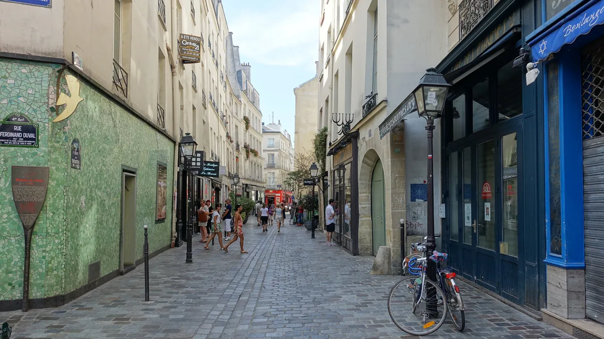
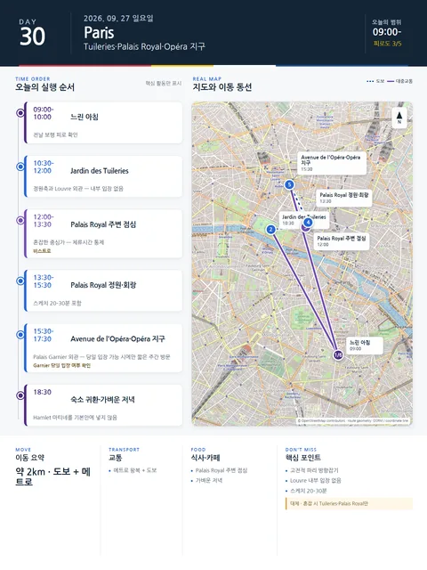

Day 30 · 9/27 일 · Paris

오늘의 주요 장소


- 핵심 실행
- Tuileries·Palais Royal·Opéra 지구
- 권장 출발
- 느린 시작
- 완충
- Louvre 내부 입장 없음
- 예약
- 이 날짜로 잡힌 예약 없음 · 현황
시간표
| 시간 | 일정 | 실행 포인트 |
|---|---|---|
| 09:00–10:00 | 느린 아침 | 전날 보행 피로 확인 |
| 10:30–12:00 | Tuileries Garden | 정원축과 Louvre 외관을 보되 내부 입장 없음 |
| 12:00–13:30 | Palais Royal 주변 점심 | 혼잡한 중심가에서 체류시간 통제 |
| 13:30–15:30 | Palais Royal 정원·회랑 | 스케치 20–30분 포함 |
| 15:30–17:30 | Avenue de l’Opéra·Opéra 지구 | Palais Garnier 외관, 당일 입장 가능 시에만 짧은 주간 방문 |
| 18:30 이후 | 숙소 귀환·가벼운 저녁 | Hamlet 마티네를 기본안에 넣지 않음 |
피로도
3/5
이 날의 메모
Tuileries, Palais Royal, Opéra 지구 — 고전적 파리의 방향잡기 도시 방향잡기
고정행사:** 없음. Garnier 내부가 불가하면 외관과 Opéra 지구 산책만으로 완결한다.
꼭 해볼 것
- Tuileries–Palais Royal–Opéra 축으로 도심의 방향을 익힌다.
- Palais Royal 회랑에서 커피 또는 30분 휴식을 둔다.
- Garnier 입장은 보너스이며 외관 관찰만으로 일정이 완전하다.
상세 실행 확인
- 최고 리스크
- 중심가 혼잡
- 우선 삭제
- Opéra 지구
- 대체안
- Tuileries·Palais Royal만
- 식사·휴식
- Palais Royal 주변 점심
- 잠금 필요
- Garnier 조건부
Google 실행지도
Tuileries · Palais Royal · Opéra 지구
지도 펼치기
지도는 펼칠 때만 불러옵니다.
Daily Action Map

실제 좌표와 OpenStreetMap을 사용한 실행용 요약입니다. 도로·대중교통 상황은 출발 직전에 다시 확인하세요.